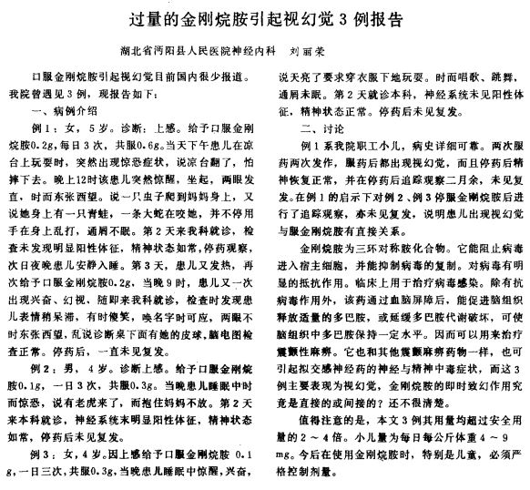

清明之际咳连不断，因为支气管感染。在服用阿莫西林抗生素后就应该考虑如何止咳了——现在是真的需要右美沙芬
本品每片含氢溴酸右美沙芬15毫克。辅料为淀粉、预胶化淀粉、蔗糖、硬脂酸镁。
现在我手上的小药片中，发挥药物作用的成分只有单个的右美沙芬。这叫单方
结果不出意料。服用一片右美沙芬后，我不仅不咳嗽了，还被自己的痰噎到怎么吐也吐不出来。原来，右美沙芬抑制了咽喉反应，导致无法正常祛痰。我不仅想要止咳，又想要化痰，还想要方便——如果买右美沙芬+氨溴索，太贵又麻烦。于是，愈美片诞生了
本品每片含氢溴酸右美沙芬15毫克、愈创木酚甘油醚100毫克。辅料为：预胶化淀粉、蔗糖、微晶纤维素、交联吡咯烷酮、硬脂酸镁、橙色包衣粉。本品为复方制剂
价格和右美沙芬相同的愈美片中多了个愈创甘醚，它缓解了我的噎痰。现在我手上的大药片中，发挥药物作用的成分有复个的右美沙芬、愈创甘醚。这叫复方
为了用药方便，或者是增强药效，也是取长补短，常将多种药物复方到一起。例如，苯海拉明可以抗晕迫，但会导致嗜睡，为了解决嗜睡则配伍氯茶碱，茶苯海明就这么诞生了；外源褪黑素可以助眠，但需要更多的维生素B6参与反应，为了解决这项需求，褪黑素胶囊通常会配伍维生素B6
单方指药剂中仅含一种药物，复方指药剂中含有两种以上药物
(忽略药物配合的酸。剂量是每片含量)
主药物：15mg右美沙芬
配伍药物：100mg愈创木酚甘油醚（不是甘油）
作为化痰药物，愈创甘醚可以缓解右美沙芬造成的噎痰。若过量，愈创甘醚会引起：呕吐、不适、恶心
如果出现噎痰情况，且有余力，可以在每次od右美沙芬时，替换一两片的愈美片。这是最好的用法
作为治疗病毒感染引起的感冒，复方氨酚烷胺无疑是成功的，从缓解症状到消除病因，它一下就把病毒性感冒的所有问题都解决了。随着时代变迁科技进步，人们发现，这份大好药中的金刚烷胺饱含问题……
[1]
这份来自1987年的报告已经说明了一切。这些4，5岁的小孩子所需剂量非常低，他们所服用的剂量换算为成年人，早就是足足的致幻剂量。于是，金刚烷胺逐渐退出了治疗感冒的舞台，却因为致幻力而被发觉……
扑热息痛常被用于处决流浪猫，因为它对于肝脏负担大，会导致流浪猫急性肝肾衰竭+中毒而死，而猫的中毒剂量很低，通常一两片就能致死。对人也是一样，医用剂量的扑热息痛对人类肝脏具有负担，若按照金刚烷胺的标准剂量12t去服用复方氨酚烷胺，则将会吃下3g扑热息痛，而扑热息痛的中毒剂量则是5g。更何况吃复方氨酚烷胺的人并没有充足的了解，经常大量吃呢！这对肝脏破坏力很大，实际上，3.6g的扑热息痛比0.36g的右美的肝脏损伤力还要大
肝脏衰竭的危害请自行查找。它甚至还会导致体内“毒素"无法分解，引起”毒素“对神经与大脑的持续毒害，造成精神症状，这叫肝性脑病。
总之，如果你非要吃金刚烷胺，请购买单方制剂
略
其实氯苯那敏还好，主要问题出在咖啡因上。对没有咖啡因耐药性的人来说，od剂量下的白兔BRON所饱含的咖啡因会产生不舒服的体验
建议在od白兔BRON前养成对咖啡因的耐药性
中成药的高光！现在你看到的是这个专题最nb！最nb！的复方药剂，复方甘草片！阿片粉的吗啡含量为10%，也就是说4mg阿片粉含有0.4mg吗啡！吗啡！吗啡！吗啡！
言归正传。除开阿片粉，其余的成分真的就是没大问题，而且味道也是逆天地nb，足以作为单方吗啡下位替代品。这导致甘草片甚至比一般的吗啡片还nb——我没叫你去吃，非医用吗啡是毒品
作为感冒性止咳的药物，复方磷酸可待因也相当成功。但同理复方氨酚烷胺，因为其含有太多的扑热息痛，通常不该用于od。实际上，标准剂量10t下，有足足4g的扑热息痛，这非常严峻
复方磷酸可待因糖浆与复方磷酸可待因口服溶液同理
（I）更倾向于感冒，（II）更倾向于咳嗽。标准剂量下分别含有≈5.95g扑热息痛、2g扑热息痛。扑热息痛太他妈多了
布洛芬的中毒剂量是0.5g~1g，过量的布洛芬和扑热息痛有点像，都会导致肝脏受损。标准剂量含有下≈1.54g布洛芬。布洛芬太他妈多了
同理复方氨酚烷胺，主要问题还是扑热息痛。笔者听说吃氨酚曲马多的人通常会吃8t，这含有2.6g扑热息痛，对肝的损害力还是很大。这就是为什么很多吃氨酚曲马多的人会出现肝功能不全的症状：浮肿、蜡黄、出血、黄疸、腹水、肝性脑病……
自己看吧这么多玩意，杂成分这么多，我不想多说什么了，别吃